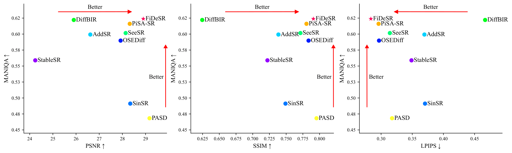
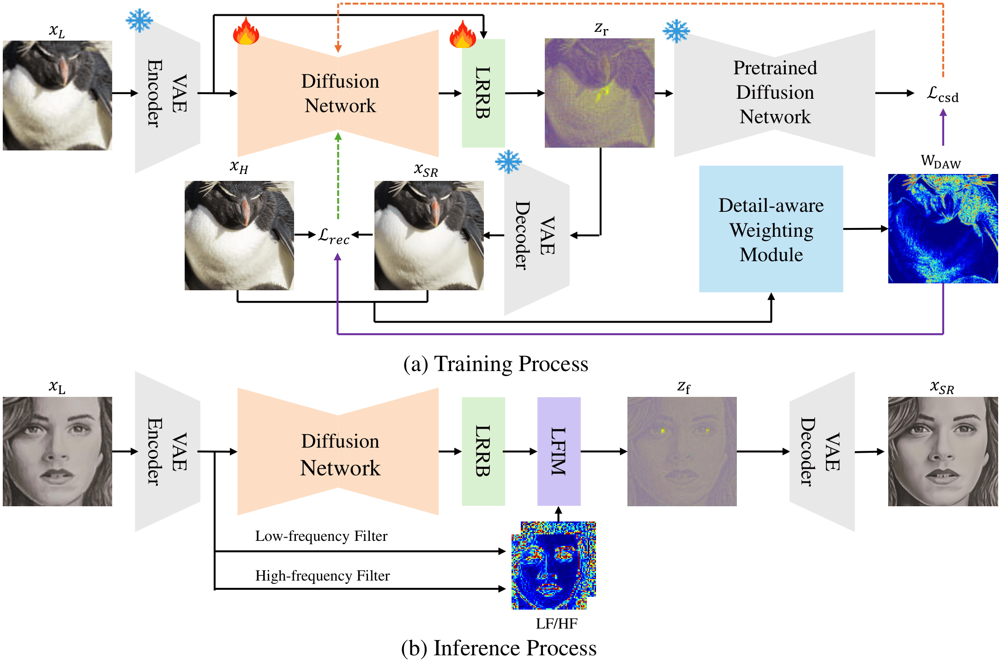
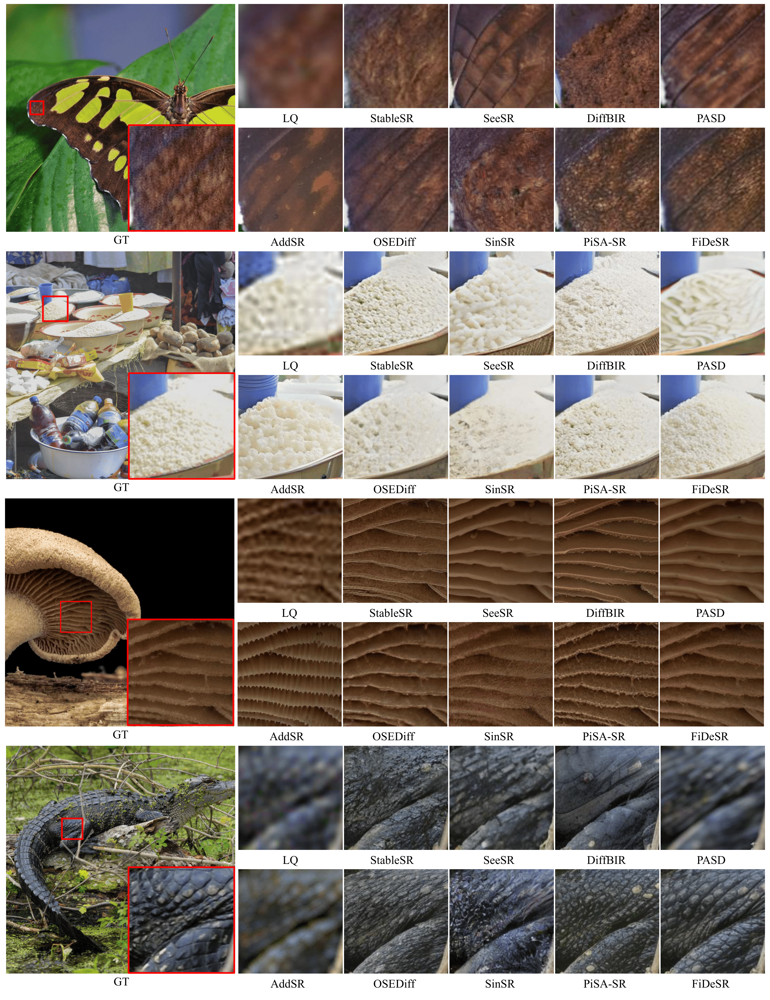

Diffusion-based approaches have recently driven remarkable progress in real-world image super-resolution (SR). However, existing methods still struggle to simultaneously preserve fine details and ensure high-fidelity reconstruction, often resulting in suboptimal visual quality. In this paper, we propose FiDeSR, a high-fidelity and detail-preserving one-step diffusion super-resolution framework. During training, we introduce a detail-aware weighting strategy that adaptively emphasizes regions where the model exhibits higher prediction errors. During inference, low- and high-frequency adaptive enhancers further refine the reconstruction without requiring model retraining, enabling flexible enhancement control. To further improve the reconstruction accuracy, FiDeSR incorporates a residual-in-residual noise refinement, which corrects prediction errors in the diffusion noise and enhances fine detail recovery. FiDeSR achieves superior real-world SR performance compared to existing diffusion-based methods, producing outputs with both high perceptual quality and faithful content restoration.
FiDeSR is a one-step diffusion framework for Real-ISR that improves both structural fidelity and fine-detail recovery. Given a low-quality input xL, we encode it into a latent zL using a pretrained VAE. A diffusion U-Net predicts an initial latent residual r that bridges zL toward its HQ counterpart. We then refine this residual with LRRB (r′ = r + Δr) to obtain a refined latent, which is decoded to produce the SR output xSR. During training, DAW focuses learning on texture-/edge-rich regions where the model currently underperforms. During inference, LFIM enables controllable low-/high-frequency enhancement by selectively injecting LF/HF components into the refined latent—without any additional training.

Training. DAW spatially weights the reconstruction losses (e.g., pixel/perceptual terms) and the regularization term
(e.g., distillation-based guidance) so the model focuses on hard, detail-rich regions rather than over-optimizing easy areas.
Inference. After the single diffusion step and LRRB refinement, LFIM decomposes the refined latent into LF/HF components
(via frequency filtering) and injects them selectively using spatial/channel gates, allowing users to tune the fidelity–detail balance.

FiDeSR restores both structural integrity and fine details more faithfully while producing sharper textures and a more natural appearance, compared to state-of-the-art diffusion-based SR baselines.
@misc{kim2026fidesrhighfidelitydetailpreservingonestep,
title={FiDeSR: High-Fidelity and Detail-Preserving One-Step Diffusion Super-Resolution},
author={Aro Kim and Myeongjin Jang and Chaewon Moon and Youngjin Shin and Jinwoo Jeong and Sang-hyo Park},
year={2026},
eprint={2603.02692},
archivePrefix={arXiv},
primaryClass={cs.CV},
url={https://arxiv.org/abs/2603.02692},
}